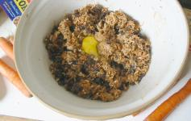
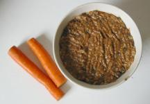
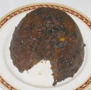

Du Podîn d'Cârotte
Îngrédgiens:
- eune tâssée d'flieu
- eune tâssée d'graîsse dé rîngnon
- eune tâssée d'corînthes
- eune tâssée d'raîsîns
- eune tâssée d'miettes dé pain
- eune tâssée d'patate grattée
- eune tâssée d'cârottes grattées
- eune tâssée d'jaune chucre
- d's êpices
- un oeu
- un quart d'tchul'lée d'bicarbonate
Èrchette:
Dêmêlez bein la flieu, lé bicarbonate et l's êpices dans eune bolle. Ajouôtez l's aut's îngrédgiens sés et r'dêmêlez. Pis vèrsez-y l'oeu d'battu et r'dêmelez l'mêlange.
Tchuithez l'podîn à l'ieau pouor trais heuthes.
  
Viyiz étout: